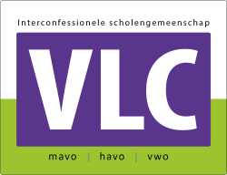
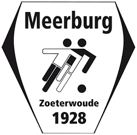
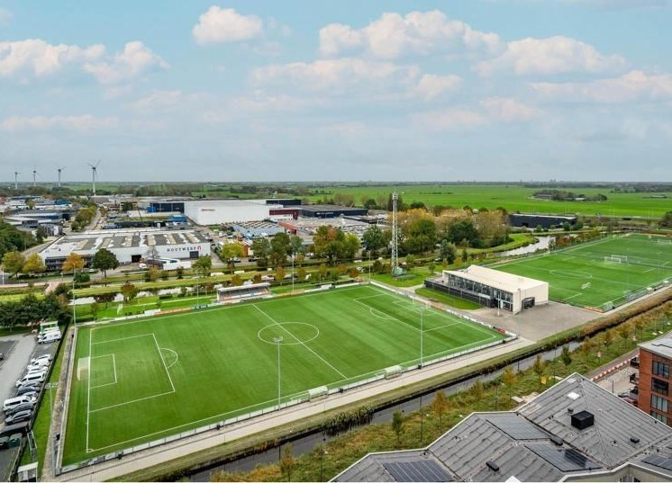
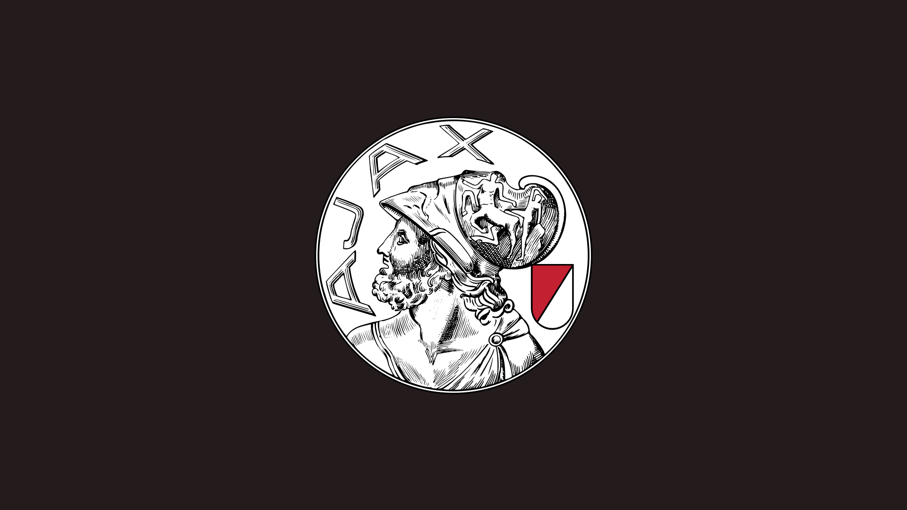

Dit ben ik!
Hoi, ik ben Tjebbe en ben 14 jaar oud. Mijn achternaam is "Krijger", dus Tjebbe Krijger.
Ik zit in de vierde klas van het Vlietlandcollege in Leiden. In mijn vrije tijd voetbal ik graag met vrienden
of speel ik fifa (voetbalgame op de computer).
Dit is wat je moet weten over mij en mijn school:
Zoals jullie nu weten zit ik dus in de vierde klas van het Vlietlandcollege. Dit ligt in Leiden en binnenkort krijgen we een nieuwe locatie.
Ik vind school over het algemeen stom, de lessen zijn vaak saai en je doet altijd hetzelfde. Ook zijn er soms hele lange dagen. Mijn lievelingsvak is informatica.
Dit omdat ik het leuk vind om nieuwe dingen uit te proberen vooral met laptops. Het is best gaaf om zulke dingen te kunnen maken zoals deze website.

Dit is wat je moet weten van mij en mijn sport:
Ik sport ook graag, ik zit namelijk op voetbal. Dit doe ik bij de voetbalclub RKVV Meerburg waar ik ook lid ben. Meerburg is een voetbalclub in Zouterwoude. Het ligt naast een snelweg maar het is er veilig genoeg.
Op de club zijn er 4 velden, 4 kunstgrasvelden waarvan er één veld kleiner is omdat daar kleinere kinderen op spelen.
 
Wat extra indormatie over mezelf:
In mijn vrije tjid vind ik het leuk om te gaan voetballen met vrienden of om fifa te spelen met hun.
Fifa is een voetbalspel op de computer, dus eigenlijk voetballen online.
Mijn favorite voetbalclub is Ajax. Het is simpelweg gewoon de beste club van Nederland!
